These are my works as designer, and later, Assistant Lead Design at The Slow Press — an independent zine interested in looking at stories surrounding food, by people passionate about food. On top of designing spreads for the zine, as Assistant Lead Design, I also assist in conceptualizing the cover shoots for the zine.
This page is not optimized for mobile.
| Jiak Kentang Minizine 2023 |
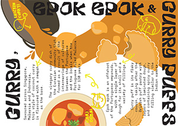 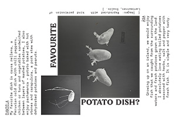 |
In collaboration with Singapore Art Museum for Singapore Biennale 2022: Natasha, as a complement to the artwork Papitas Tarpuycha/Earthing Potatoes by Åsa Sonjasdotter and Daniela Zambrano Almidón, 2011-ongoing. |
| Volume 5: Bittersweet 2022 |
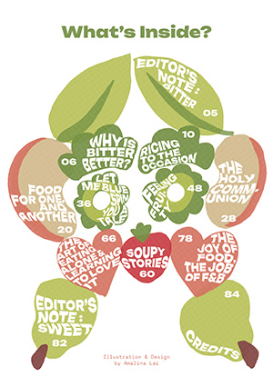 | Contents Page Spread design & illustration. |
| 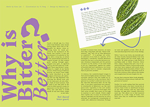 | Why is Bitter Better? Spread design. |
|
| 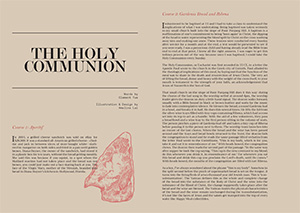 | The Holy Communion Spread design & illustration. |
|
| Volume 4 2021 |
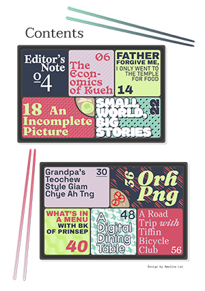 | Contents Page Spread design & illustration. |
| 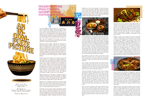 | An Incomplete Picture Spread design. |
|
| Volume 3 2021 |
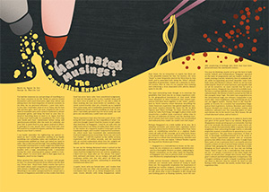 | Marinated Musings Spread design & illustration. |
| 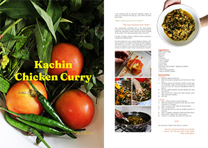 | Kachin Chicken Curry Spread design. |
|
| Volume 2 2021 |
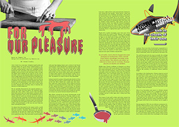 | For Our Pleasure Spread design & illustration. |
| Volume 1 2021 |
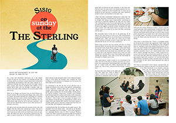 | Sisig on Sunday At The Sterling Spread design. |